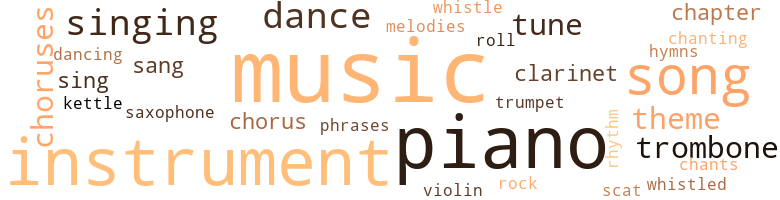
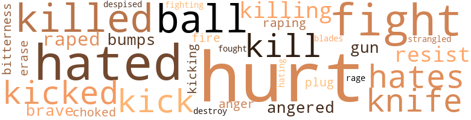
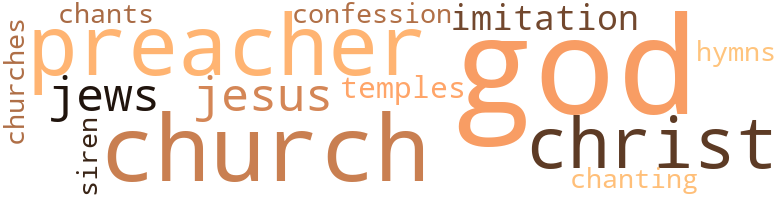

Drop of Patience (A), by Kelley, William Melvin (1965)
163 music-related terms matched in this text.
Most frequent terms in this topic: music (40); piano (28); instrument (25); song (13); singing (6)
chant.n.01
Definition: a repetitive song in which as many syllables as necessary are assigned to a single tone
| word | sentence |
|---|---|
| chants | He sat quietly humming one of the chants the little girls of Harlem sang when they skipped rope . |
chapter.n.01
Definition: a subdivision of a written work; usually numbered and titled
| word | sentence |
|---|---|
| chapter | In his closet his hands found a music book with a chapter about the muscles of the mouth that were involved in producing a certain tone ( something he had learned several months before , Hardie having read the chapter to him ) and started downstairs . |
| chapter | In his closet his hands found a music book with a chapter about the muscles of the mouth that were involved in producing a certain tone ( something he had learned several months before , Hardie having read the chapter to him ) and started downstairs . |
chorus.n.01
Definition: any utterance produced simultaneously by a group
| word | sentence |
|---|---|
| chorus | To a chorus of giggles , razor-sharp whispers and clicking tongues , he dressed himself , untangling each piece of clothing from the pile at his feet . |
| choruses | To play something good , or hear it , you got to have eight choruses . |
| choruses | I said when the measures is metronomizing the choruses , then you got a kind of jazzy music that 's working on a three-tone scale , not on a five like most people think . |
| choruses | When he had finished , he stood up and pressed his ear against the door , listening to the last few choruses of Hardies number . |
| choruses | " You take the first two choruses , Hardie . |
| chorus | Rodney finished off , followed by some of the others , then they played the closing chorus . |
clarinet.n.01
Definition: a single-reed instrument with a straight tube
| word | sentence |
|---|---|
| clarinet | " I play clarinet in the high school band . |
| clarinet | Suspicion was shrill in his head , a clarinet played by a shaky old man . |
cornet.n.01
Definition: a brass musical instrument with a brilliant tone; has a narrow tube and a flared bell and is played by means of valves
| word | sentence |
|---|---|
| trumpet | Then when I got to be nine , they said to all the nine-year-olds , " You playing sax , and you playing trombone and you playing trumpet - " and like that . |
dance.n.01
Definition: an artistic form of nonverbal communication
| word | sentence |
|---|---|
| dance | I was getting tired myself , but I never thought I 'd get a better thing , until O'Gee come down to play a dance and heard me and asked me to take his second chair , " He paused , cleared his throat . |
| dances | Little dances , rock bands , a couple records . |
| dance | The guests at the hotel did dance . |
dance.n.02
Definition: a party of people assembled for dancing
| word | sentence |
|---|---|
| dance | Ludlow sounded good with either Reno 's tenor or Hardie 's trombone , but together , the three of them would sound like a sweet society dance band . |
dance.v.02
Definition: move in a pattern; usually to musical accompaniment; do or perform a dance
| word | sentence |
|---|---|
| dancing | People should n't be dancing while you play . " |
dance.v.03
Definition: skip, leap, or move up and down or sideways
| word | sentence |
|---|---|
| dance | People came to Boone 's to talk , sometimes to dance , but very seldom to listen to music . |
| dance | But a person had to be listening to dance . |
hymn.n.01
Definition: a song of praise (to God or to a saint or to a nation)
| word | sentence |
|---|---|
| hymns | He might find that store-front church , or perhaps a church on a dirt road in the South , no more than a shack , with a congregation of twelve or so , without an organ to help their high , shaky voices carry the tunes of their hymns . |
kettle.n.04
Definition: a large hemispherical brass or copper percussion instrument with a drumhead that can be tuned by adjusting the tension on it
| word | sentence |
|---|---|
| kettle | He waited quietly , surrounded by the sounds of the kitchen , which he loved : the water roaring in the kettle , the ham 's fat dripping and sizzling , the knockings and bangings and stirrings . |
music.n.01
Definition: an artistic form of auditory communication incorporating instrumental or vocal tones in a structured and continuous manner
| word | sentence |
|---|---|
| music | He fingered his instrument , but during the next five hours , he did not often think of music as he hoped he would . |
| music | Anyway , Rodney , he did n't like Norman Spencer 's music at all and l was getting hot under the collar and thinking it was time to go to New York . |
| music | " You call that music ? " |
| music | In his closet his hands found a music book with a chapter about the muscles of the mouth that were involved in producing a certain tone ( something he had learned several months before , Hardie having read the chapter to him ) and started downstairs . |
| music | It was in your music . |
| music | He had been getting tired of the music Rodney forced him to play . |
| music | He had not been thinking too much about music lately , but he was good enough so that no one seemed to complain . |
| music | " I do n't know for sure , but I 'm thinking about quitting music . " |
| music | But I did practice good , because I could tell music was better than a tin cup on somebody 's corner . |
| music | In his mind , she joked about not being able to find her underpants , she told him not to give up music , to wait just one short year . |
| music | Most nights , when the air was heavy , people laughed and joked below the window and music from four or five neighborhood jukeboxes spilled into his room . |
| music | He left the Braille music books and everything else . |
| music | After all , he had never expected more than a living from music and Inez had given him that . |
| music | He wondered why he had not thought of all this before , realizing vaguely that in the last three years his entire attitude toward music had changed . |
| music | Their relationship was built only around music . |
| music | He had known too that he was tired of what music sounded like - heavy and loud - and so at sessions he had suggested to the other men how they might play a certain song . |
| music | But he had never thought of this as a new style ; he was simply trying to get a sound to the music that he liked . |
| music | He listened to his own solo , attempting in vain to find this new style of music Hardie had been talking about . |
| music | Each time they played together Ludlow found something new in the pianist 's music , something which gave him enough ideas to last a month . |
| music | " What I want to know is , why are you playing music , Mister Spencer ? " |
| music | Poor old colored jazz music player like me should n't never get thanked by no white man , boss . |
| music | " God must love music too - all kinds . |
| music | ' Went to school , college , taking music . |
| music | " Because it 's the black man 's music ! " |
| music | Suppose to listen to music here . " |
| music | I said when the measures is metronomizing the choruses , then you got a kind of jazzy music that 's working on a three-tone scale , not on a five like most people think . |
| music | The music ended and there were footsteps at the top of the stairs . |
| music | When she killed the motor , there was a radio , probably in someone 's bedroom , playing classical music . |
| music | You want to play music . |
| music | Boone 's Café was a long , barnlike building with a high roof that swallowed the band 's music and much of the chatter of the drinkers . |
| music | People came to Boone 's to talk , sometimes to dance , but very seldom to listen to music . |
| music | Guiding himself along the wall , he went toward the kitchen , away from the music , pushed through the smooth-swinging door . |
| music | The clerk 's answer came from behind a radio which played popular violin music . |
| music | " Ai n't out here to play music tonight , folks . |
| music | She had been given two tickets to a concert of West African music , and she had thought he might want to go . |
| music | We have cheated ourselves of the best music we will probably hear in our lifetime . |
| music | The audience sat and talked , and in a corner , where their music would not bother the audience too much , the musicians played . |
| Music | Music had been only his way of staying off the corners with a tin cup in his hand . |
| music | There must be some people who lived for music , to play it and hear it played . |
| music | He had never before thought that music would take him anywhere and now he realized it could quite possibly take him all over the world . |
| music | The set before he had tried to play especially well ; it was his music that usually started Malveen . |
musical_instrument.n.01
Definition: any of various devices or contrivances that can be used to produce musical tones or sounds
| word | sentence |
|---|---|
| instrument | Ludlow waited at the bar , his cane hooked over his left arm , his instrument case in his right hand , his other hand clutching the smooth wood . |
| instrument | Me bent to touch it and found his instrument case . |
| instrument | He fingered his instrument , but during the next five hours , he did not often think of music as he hoped he would . |
| instrument | He thought how nice it would be simply to pack his instrument and come home to his own girl . |
| instrument | At one , back on the stage , his instrument to his lips , caring not at all whether Rodney approved , Ludlow tried some new things he had been practicing . |
| instrument | He knew now he was the best on his instrument in the entire city . |
| instrument | He found his instrument on top of the piano . |
| instrument | He had gone to the bed , where now he sat running his fingers over his instrument . |
| instrument | Because Boone 's was more his world now than anyplace else , he began to spend a great deal more time there , even some long afternoons , when , alone in the empty bar , he would pick out tunes on the piano or practice his own instrument . |
| instrument | He closed up his instrument case , leaving it on the piano . |
| instrument | I did n't have nothing to do with choosing what instrument . |
| instrument | He would have to tell Rodney and pick up his instrument at Boone 's . |
| instrument | Both before and after work he would sit by his window , fingering his instrument . |
| instrument | He fingered his instrument case , amazed , as he was from time to time , that the ability to produce noises from a twisted metal tube encrusted with smooth buttons could actually bring him this far . |
| instrument | He put down his instrument case and bag , found the key , and opened the door . |
| instrument | He closed the door , went to the dresser and put together his instrument . |
| instrument | Hardie placed Ludlow 's hands on his instrument , which was atop the piano , then dropped his arm . |
| instrument | He had come there alone , his instrument case in his hand , his feet knowing he was straying off the path when his footfalls were softened by leaves and pine needles . |
| instrument | He bent forward , opened his case and put down his instrument . |
| instrument | Whoever was playing , and I did not immediately recognize the musician and had not read the album 's liner notes , had more than mastered his instrument . |
| instrument | When he finished and lowered his instrument , there was some applause , a rarity in Boone 's Café . |
| instrument | Ludlow named a few famous musicians ; all but one played his own instrument . |
| instrument | His instrument , out of its case , was lying on the already made bed . |
| instrument | He picked up the instrument and , without putting it to his lips , ran up and down the scales . |
| instrument | He stood up and put his instrument on the chair , and went to the bed . |
phrase.n.02
Definition: a short musical passage
| word | sentence |
|---|---|
| phrases | He tried to recall phrases , melodies , that would in turn help him to remember what he had done with the ballad the night before . |
piano.n.01
Definition: a keyboard instrument that is played by depressing keys that cause hammers to strike tuned strings and produce sounds
| word | sentence |
|---|---|
| piano | I mean , I started to really listen to some things Norman Spencer was doing on piano - like breaking up time a little . |
| piano | He finished his solo and backed to the piano . |
| piano | Ludlow ' took a step toward the sound of Rodney 's piano . |
| piano | He found his instrument on top of the piano . |
| piano | Ludlow set his case on the piano and snapped it open . |
| piano | Because Boone 's was more his world now than anyplace else , he began to spend a great deal more time there , even some long afternoons , when , alone in the empty bar , he would pick out tunes on the piano or practice his own instrument . |
| piano | They said , " You taking piano . " |
| piano | He closed up his instrument case , leaving it on the piano . |
| piano | Everybody took piano . |
| piano | They had just finished a number , and while the audience , composed mostly of musicians , applauded , Ludlow rested his elbow on top of the upright piano and asked Spencer what he wanted to play next . |
| piano | The piano top slammed down . |
| piano | We have a grand piano . " |
| piano | " A grand piano , boss ? |
| piano | Really , a grand piano ? |
| piano | Only played a whorehouse upright piano in my life . |
| piano | Imagine old Norman T. Spencer on a real live grand piano - " " All right , we 'll be there . " |
| piano | To the left , but several rooms away , someone was playing a piano . |
| piano | There was even a guest who would give them a framework of chords on the piano . |
| piano | There was a piano in the corner . |
| piano | Hardie came hack from the piano and stood before him . |
| piano | Rodney 's voice whined above piano chords . |
| piano | Hardie placed Ludlow 's hands on his instrument , which was atop the piano , then dropped his arm . |
| piano | Ludlow knew the stand perfectly if first he located the piano . |
| piano | His back pressed against the piano , Ludlow listened to Hardie 's solo and thought over all be already knew about women and making love to them . |
| piano | " Over here , on my right side , is the leader of my group , plays piano . |
| piano | Before that I played piano a few years . |
| piano | I mean , I started on piano . " |
| piano | The exception was Norman Spencer , who played a rugged , old-fashioned piano . |
rhythm.n.04
Definition: the arrangement of spoken words alternating stressed and unstressed elements
| word | sentence |
|---|---|
| rhythm | Ludlow drummed calypso rhythm on the table . |
rock_'n'_roll.n.01
Definition: a genre of popular music originating in the 1950s; a blend of black rhythm-and-blues with white country-and-western
| word | sentence |
|---|---|
| rock-and-roll | We had wasted , neglected , the only undisputed genius jazz has produced in the last two decades ; we have allowed him to spend the last seven years in cheap hotels , playing in bad rock-and-roll bands . |
sax.n.02
Definition: a single-reed woodwind with a conical bore
| word | sentence |
|---|---|
| saxophone | There was a nose smaller even than a key on an alto saxophone and two eye sockets and cars . |
scat.n.01
Definition: singing jazz; the singer substitutes nonsense syllables for the words of the song and tries to sound like a musical instrument
| word | sentence |
|---|---|
| scat | Finally the train climbed a grade , went into a curve , crushing him back into the straw scat . |
sing.v.02
Definition: produce tones with the voice
| word | sentence |
|---|---|
| sing | She 'd sing , then here I come with my eight bars . |
| sang | He sat quietly humming one of the chants the little girls of Harlem sang when they skipped rope . |
| sang | They screamed , cheered , laughed ; some even sang . |
| sing | " Going to tell you folks some funny stories and sing some songs . " |
singing.n.01
Definition: the act of singing vocal music
| word | sentence |
|---|---|
| singing | There was a jukebox and Inez was singing . |
| singing | When finally they made love , in her apartment with Inez Cunningham singing for them on the phonograph , and the early morning sun 's beat baking them , it came without planning or preparation . |
| singing | In the kitchen , the cooks argued in Chinese , more like singing than shouting . |
| singing | He sat now , birds and leaves singing and shuffling overhead , and practiced . |
| singing | Inez Cunningham would be singing . |
| singing | His little sister should have been running , screeching in the hallway ; behind the house his brother should have been batting stones with a stick ; his mother should have been singing . |
song.n.01
Definition: a short musical composition with words
| word | sentence |
|---|---|
| song | A bit frightened now , he attempted to make himself feel better by sucking his thumb and humming a song his mother had taught him . |
| song | I 'll get them to play your favorite song . " |
| song | In the house behind him the radio played the song . |
| song | Perhaps it was the song they had played . |
| song | I mean , it always happy at Boone 's and like I told you , I 'll get them to play your favorite song . |
| song | It was a standard bluesy-type song , which had been made popular several years before by Inez Cunningham . |
| song | You did n't play that last song , you jumped on it with both feet and stomped it to death . " |
| song | But it was an important part of his plan to play Etta-Sue 's favorite song ; he pretended humility . |
| song | Her favorite song That Wo n't Happen to Me . |
| song | It a good song . |
| song | He had known too that he was tired of what music sounded like - heavy and loud - and so at sessions he had suggested to the other men how they might play a certain song . |
| songs | They went into the street , passing the smell of chicken and ribs which came from open stores , passing mock arguments and whooping laughter , passing groups of children chanting songs to the smack of a rope on pavement . |
| song | " You wrung that song dry ! " |
| songs | In some of the houses they passed , radios and phonographs played Christmas songs . |
| song | After a moment the trombone player started another song . |
| songs | " Going to tell you folks some funny stories and sing some songs . " |
theme.n.03
Definition: (music) melodic subject of a musical composition
| word | sentence |
|---|---|
| theme | Ludlow stated the theme and took the first solo . |
| theme | On stage , the alternate group had begun to play its theme . |
| theme | Usually there has been no rehearsal and the statement of the theme ( if there is a theme ) is usually shoddy . |
| theme | Usually there has been no rehearsal and the statement of the theme ( if there is a theme ) is usually shoddy . |
tone.v.01
Definition: utter monotonously and repetitively and rhythmically
| word | sentence |
|---|---|
| chanting | They went into the street , passing the smell of chicken and ribs which came from open stores , passing mock arguments and whooping laughter , passing groups of children chanting songs to the smack of a rope on pavement . |
trombone.n.01
Definition: a brass instrument consisting of a long tube whose length can be varied by a U-shaped slide
| word | sentence |
|---|---|
| trombone | Then when I got to be nine , they said to all the nine-year-olds , " You playing sax , and you playing trombone and you playing trumpet - " and like that . |
| trombone | People 'll always like trombone , you know ; I guess he made more money than any of us . |
| trombone | Ludlow sounded good with either Reno 's tenor or Hardie 's trombone , but together , the three of them would sound like a sweet society dance band . |
| trombone | The tone was so full that he imagined himself to be in the very bell of the trombone , the brass ringing and shaking around him . |
tune.n.01
Definition: a succession of notes forming a distinctive sequence
| word | sentence |
|---|---|
| melodies | He tried to recall phrases , melodies , that would in turn help him to remember what he had done with the ballad the night before . |
| tunes | Because Boone 's was more his world now than anyplace else , he began to spend a great deal more time there , even some long afternoons , when , alone in the empty bar , he would pick out tunes on the piano or practice his own instrument . |
| tune | When their cheer died , Ludlow realized the musicians were playing what , on a normal night , would have been a loud tune . |
| tunes | Out of time , with many mistakes , but still recognizable , he played one of Ludlow 's tunes , a ballad , Cherry Tree . |
| tunes | He might find that store-front church , or perhaps a church on a dirt road in the South , no more than a shack , with a congregation of twelve or so , without an organ to help their high , shaky voices carry the tunes of their hymns . |
violin.n.01
Definition: bowed stringed instrument that is the highest member of the violin family; this instrument has four strings and a hollow body and an unfretted fingerboard and is played with a bow
| word | sentence |
|---|---|
| violin | The clerk 's answer came from behind a radio which played popular violin music . |
whistle.v.01
Definition: make whistling sounds
| word | sentence |
|---|---|
| whistle | Someone in the far corner was blowing a policeman 's whistle . |
| whistled | Not far away , birds whistled and clattered in the trees . |
67 violence-related terms matched in this text.
Most frequent terms in this topic: hurt (12); hated (5); fight (4); killed (3); resist (2)
anger.n.01
Definition: a strong emotion; a feeling that is oriented toward some real or supposed grievance
| word | sentence |
|---|---|
| anger | He had walked slowly for ten minutes before he realized his cheeks were wet with tears , not so much from shame as from anger . |
anger.v.02
Definition: become angry
| word | sentence |
|---|---|
| angered | Their attempts to speak like Negroes annoyed , angered him . |
| angered | He decided to tell her , certain that even if he angered her , she would still drive him home . |
bump.n.01
Definition: a lump on the body caused by a blow
| word | sentence |
|---|---|
| bumps | When he had removed her bra , it had left designs on her breasts , small grooves and bumps . |
| bumps | On her back were many bumps the size of the heads of pins . |
contemn.v.01
Definition: look down on with disdain
| word | sentence |
|---|---|
| despised | She thought she was special ; in the daytime she despised him because he worked at night in bars , because he was blind . |
destroy.v.04
Definition: put (an animal) to death
| word | sentence |
|---|---|
| destroy | The day after Christmas he woke up and dressed early enough to retrieve and destroy it before it had been mailed . |
erase.v.01
Definition: remove from memory or existence
| word | sentence |
|---|---|
| erase | But that would only erase the advantage he now held . |
fight.n.05
Definition: a boxing or wrestling match
| word | sentence |
|---|---|
| fight | Mama and me had a fight before you come down . |
| fight | " You have a big fight ? " |
| fight | I mean , she told me you had a fight and that ai n't good . |
fight.v.02
Definition: fight against or resist strongly
| word | sentence |
|---|---|
| fight | " I do n't like to fight with you . |
| fighting | I - " She did not finish , began to gasp , fighting tears . |
| fought | He fought being impatient with her . |
fury.n.01
Definition: a feeling of intense anger
| word | sentence |
|---|---|
| rage | He may have already realized what had happened , may have been hiding behind his rage to avoid the pain of it . |
gag.v.06
Definition: cause to retch or choke
| word | sentence |
|---|---|
| choked | She paused , choked on her next words to him . |
gun.n.01
Definition: a weapon that discharges a missile at high velocity (especially from a metal tube or barrel)
| word | sentence |
|---|---|
| gun | I got a gun . |
| gun | " I got this gun in my left pocket and I can shoot a hole in my stomach if anybody gets near me . " |
hate.v.01
Definition: dislike intensely; feel antipathy or aversion towards
| word | sentence |
|---|---|
| hates | She hates your guts . " |
| hated | He hated fawning to Rodney , but it was the best way . |
| hates | He so bitter and hates white people so bad he might call you out your name right here . |
| hated | He hated doing all this , using Hardie , and what he would have to do in a few moments . |
| hating | That night , hating himself as he did it , he dictated , to a sleepy and slightly drunk desk clerk , a short note to his daughter . |
| hated | Sitting on a rough log in the late summer afternoon , he had been thinking how much he hated winter . |
| hated | Two men passed , talking loudly about how much they hated their jobs . |
| hated | He hated too the way this came out . |
hurt.v.04
Definition: cause damage or affect negatively
| word | sentence |
|---|---|
| hurt | " So yesterday , I did n't mean to hurt your feelings or anything by being so short . |
| hurt | " You 'll be hurt if I tell you . " |
| hurt | " I did n't want to hurt your feelings . " |
injury.n.01
Definition: any physical damage to the body caused by violence or accident or fracture etc.
| word | sentence |
|---|---|
| hurt | She sounded hurt . |
kick_back.v.02
Definition: spring back, as from a forceful thrust
| word | sentence |
|---|---|
| kicked | " She kicked me out in the hall with all my clothes off . |
| kick | Ludlow started to kick his bare feet at the assistant and received a burning , ringing slap on his ear . |
| kicking | Ludlow was lifted into the air , still kicking and yelling . |
| kicked | In her room , still without speaking , she closed and locked the door , kicked off her shoes , and unzipped her dress . |
| kick | Trying to kick out at the voice , he pulled himself off balance , but did not fall down . |
kill.v.10
Definition: cause the death of, without intention
| word | sentence |
|---|---|
| kill | " Mama , he planning to kill her . |
| killing | The pianist mimicked a white person : " Oh , niggers are so exciting , always raping and killing each other ! " |
| killing | Right now , they rounding up Jews and killing them . |
| killed | They killed his daddy and raped his mama and made him watch the whole thing . " |
| killed | Then I told her they killed your daddy and raped your mama and made you watch - " " But my father 's running a groc - " " Wait , man . |
| killed | When she killed the motor , there was a radio , probably in someone 's bedroom , playing classical music . |
| kill | I 'm planning to kill myself . " |
knife.n.02
Definition: a weapon with a handle and blade with a sharp point
| word | sentence |
|---|---|
| knife | He was about to say it would not be necessary , but Etta-Sue had already snatched away his knife and fork . |
| knife | Then it was a knife between his legs . . . . |
musket_ball.n.01
Definition: a solid projectile that is shot by a musket
| word | sentence |
|---|---|
| ball | She cleared her throat a good deal , as if the tightness was caused not by what she was , but rather by a small bone or ball of dust . |
| ball | Her nose was a small ball with good-sized nostrils . |
| balls | Not far above that , the bridge of the nose was flat , separating two bulging balls . |
open_fire.v.01
Definition: start firing a weapon
| word | sentence |
|---|---|
| fire | If Rodney said anything , Ludlow would tell him to fire him . |
pain.v.02
Definition: cause emotional anguish or make miserable
| word | sentence |
|---|---|
| hurt | For an instant he wondered from where had come the impulse to hurt . |
| hurt | Never again did he want to put himself in a position where he could so easily be humiliated , hurt or shamed . |
| hurt | She was telling him , whether or not she knew it , that she had once been hurt . |
| hurt | He was hurt that she was not responding . |
| hurt | He gripped his cane so tightly his hand began to hurt . |
| hurt | I do n't want to hurt you and I 'm afraid I will if we get married . " |
| hurt | Finally : " You understand how I can hurt you ? |
| hurt | I wo n't hurt nobody . " |
punch.v.01
Definition: deliver a quick blow to
| word | sentence |
|---|---|
| plug | " Well , lead me to the hole and let 's see if I can plug it . " |
rape.v.01
Definition: force (someone) to have sex against their will
| word | sentence |
|---|---|
| raping | The pianist mimicked a white person : " Oh , niggers are so exciting , always raping and killing each other ! " |
| raped | They killed his daddy and raped his mama and made him watch the whole thing . " |
| raped | Then I told her they killed your daddy and raped your mama and made you watch - " " But my father 's running a groc - " " Wait , man . |
resentment.n.01
Definition: a feeling of deep and bitter anger and ill-will
| word | sentence |
|---|---|
| bitterness | " Okay , Reno , go get your bitterness taken care of . " |
resist.v.04
Definition: withstand the force of something
| word | sentence |
|---|---|
| resist | He could not resist asking her the next question . |
| resist | He could not resist challenging her . |
strangle.v.01
Definition: kill by squeezing the throat of so as to cut off the air
| word | sentence |
|---|---|
| strangled | After the set , Ludlow decided to walk around the block before he lost his temper , charged off the stage and strangled the first person who crossed his path . |
sword.n.01
Definition: a cutting or thrusting weapon that has a long metal blade and a hilt with a hand guard
| word | sentence |
|---|---|
| blades | " Lying on you got to be like lying on razor blades . |
weather.v.01
Definition: face and withstand with courage
| word | sentence |
|---|---|
| brave | He decided to brave the laughter . |
| brave | Perhaps ' brave ' seems a strange word to describe a tone , but brave it was , and deep and strong . |
49 religion-related terms matched in this text.
Most frequent terms in this topic: God (20); church (6); preacher (5); Christ (4); Jews (2)
chant.n.01
Definition: a repetitive song in which as many syllables as necessary are assigned to a single tone
| word | sentence |
|---|---|
| chants | He sat quietly humming one of the chants the little girls of Harlem sang when they skipped rope . |
church.n.02
Definition: a place for public (especially Christian) worship
| word | sentence |
|---|---|
| church | " In church they always say you got to love and trust people . |
| church | I mean , that in church , but still it kind of true . |
| church | I remembered because last time was the weekend of Mama 's church supper . |
| church | She go to church regular . " |
| churches | I might want to play in one of them little storefront churches where I know folks 'll be listening . |
| church | He might find that store-front church , or perhaps a church on a dirt road in the South , no more than a shack , with a congregation of twelve or so , without an organ to help their high , shaky voices carry the tunes of their hymns . |
| church | He might find that store-front church , or perhaps a church on a dirt road in the South , no more than a shack , with a congregation of twelve or so , without an organ to help their high , shaky voices carry the tunes of their hymns . |
church.n.04
Definition: the body of people who attend or belong to a particular local church
| word | sentence |
|---|---|
| Church | So I step up and say , ' Excuse me , miss , I 'm a visiting preacher and I wonder if you can kindly tell me how to get to the Our Lord the Holy Savior Church ? |
confession.n.05
Definition: the document that spells out the belief system of a given church (especially the Reformation churches of the 16th century)
| word | sentence |
|---|---|
| confession | " I want to make a confession . " |
god.n.03
Definition: a man of such superior qualities that he seems like a deity to other people
| word | sentence |
|---|---|
| God | " Well , for God 's sakes , sweetness , unhook it . " |
| God | " Here 's your God damn cane . " |
| God | Just God 's will . " |
| God | " God 's will , is all . " |
| God | Here you standing in front of a God damn barbershop inspecting my checks and you asking me to believe you a visiting preacher . ' |
| God | " She went for the God damn truth , man ! " |
| God | " I left because of them God damn little eight-bar solos . |
| God | They got two toilets and another thing that 's about the size of a toilet , but looks more like a God damn bathtub ! |
| God | " Sure , but - " " Look , man , if you do n't want to screw , maybe she 'll play some God damn cards with you . " |
| God | " We won the God damn war ! |
| God | God damn ice ! " |
| God | I 'm sure glad I do n't got to drive , but Reno 's a God damn maniac . " |
| God | It so hard being colored that , quiet as it kept , maybe I 'd say I was n't colored if God give me the chance . |
| God | I 'll come back like a God damn homing pigeon . " |
| God | " Without my God damn elbows , I would n'ta even played with Inez . " |
| God | Maybe you should - " ' ' " Mind your own God damn business , will you ? " |
| God | ... So when l got out the last time , I was an old man , thirty-four God damn years old , but I 'd go into a club and some kid musician 'd say , " He Ludlow Washington . |
| God | I made the same God damn mistake two times . |
| God | " Rodney bending over her table like it a God damn altar . " |
| God | " Honest to God . " |
hymn.n.01
Definition: a song of praise (to God or to a saint or to a nation)
| word | sentence |
|---|---|
| hymns | He might find that store-front church , or perhaps a church on a dirt road in the South , no more than a shack , with a congregation of twelve or so , without an organ to help their high , shaky voices carry the tunes of their hymns . |
imitation.n.01
Definition: the doctrine that representations of nature or human behavior should be accurate imitations
| word | sentence |
|---|---|
| imitation | He tried to imitate how Hardie would have said it , and it sounded just like an imitation , not at all real or relaxed , rather false and shrill . |
jesus.n.01
Definition: a teacher and prophet born in Bethlehem and active in Nazareth; his life and sermons form the basis for Christianity (circa 4 BC - AD 29)
| word | sentence |
|---|---|
| Jesus | Jesus Christ ! " |
| Jesus | Most folks thinks them is ungodly , but I reckon Jesus 'd forgive musicians their vices just as soon as he 'd forgive the Thief . " |
jew.n.01
Definition: a person belonging to the worldwide group claiming descent from Jacob (or converted to it) and connected by cultural or religious ties
| word | sentence |
|---|---|
| Jews | Right now , they rounding up Jews and killing them . |
| Jews | " My father says that when it 's all counted , two hundred fifty thousand soldiers will have been billed - not counting the other side , and the atom bombs and the Jews . |
messiah.n.01
Definition: any expected deliverer
| word | sentence |
|---|---|
| Christ | " And for Christ 's sake , get him quiet ! " |
| Christ | Jesus Christ ! " |
| Christ | " Juanita , for Christ 's sake , let him - " " Hold it , man . |
| Christ | " And for Christ 's sake , do n't call me Miss Lewis ! " |
preacher.n.01
Definition: someone whose occupation is preaching the gospel
| word | sentence |
|---|---|
| preacher | My daddy was a preacher and did n't think I could he nothing but a beggar or something . |
| preacher | So I step up and say , ' Excuse me , miss , I 'm a visiting preacher and I wonder if you can kindly tell me how to get to the Our Lord the Holy Savior Church ? |
| preacher | Here you standing in front of a God damn barbershop inspecting my checks and you asking me to believe you a visiting preacher . ' |
| preacher | But then I look up and she starting to chuckle and then she laughing and then she howling and she do n't stop for ten minutes , all the time saying , ' A visiting preacher ! |
| preacher | He say he a visiting preacher ! ' |
| preachers | " So this the visiting preachers friend , huh ? |
siren.n.01
Definition: a sea nymph (part woman and part bird) supposed to lure sailors to destruction on the rocks where the nymphs lived
| word | sentence |
|---|---|
| siren | An ambulance rushed by , its siren curling in the quiet night . |
temple.n.03
Definition: an edifice devoted to special or exalted purposes
| word | sentence |
|---|---|
| temples | Ludlow laughed until his temples ached . |
tone.v.01
Definition: utter monotonously and repetitively and rhythmically
| word | sentence |
|---|---|
| chanting | They went into the street , passing the smell of chicken and ribs which came from open stores , passing mock arguments and whooping laughter , passing groups of children chanting songs to the smack of a rope on pavement . |